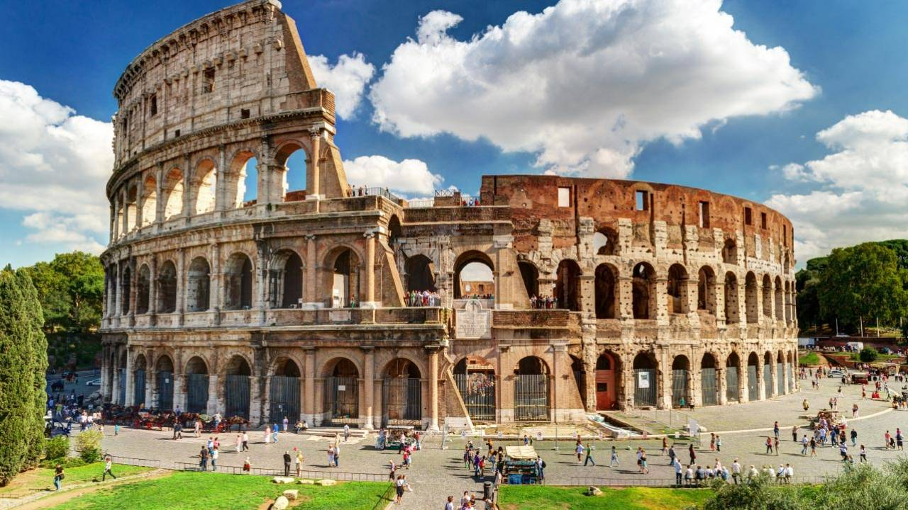

Conheça as curiosidades das 7 Maravilhas do mundo Moderno

Mas, afinal, como surgiu as sete maravilhas do mundo?
As 7 Maravilhas do Mundo Moderno têm esse nome não é por acaso. Antigamente, outros lugares foram escolhidos para representarem o que o mundo tinha de mais bonito. São eles: Jardins suspensos da Babilônia (Iraque), Pirâmides de Gizé (Egito), Estátua de Zeus (Grécia), Templo de Ártemis (Turquia), Mausoléu de Halicarnasso (Turquia), Colosso de Rodes (Grécia) e Farol de Alexandria (Turquia).
Entretanto, em 2007 uma organização suíça se propôs a atualizar essa lista de acordo com o que chamou de “Mundo Moderno”.
No início 222 lugares foram escolhidos, depois reduzidos para 77 e após uma eleição, escolheu-se o novo top 7 mundial, compondo: Cristo Redentor (Brasil), Taj Mahal (Índia), Muralha da China (China), Machu Picchu (Peru), Coliseu de Roma (Itália), Ruínas de Petra (Jordânia) e Chichén Itza (México).
Cristo Redentor

Fonte: Grupo Cataratas
1. A estátua foi inaugurada em 12 de Outubro de 1931. E fica localizada no Parque Nacional da Tijuca.
2. A estátua foi considerada Patrimônio da Humanidade pela Unesco em 2012.
3. A estátua foi construída apenas com doações dos brasileiros, custando em média 2.500 contos de réis, hoje em dia esse mesmo valor equivale a R$9,5 milhões.
4. O coração do Cristo é a única parte do interior que foi projetada e mede 1,30 metros de altura.
Taj Mahal

Fonte: Cultura Genial
1. O imperador Shah Jahan mandou construir o Taj Mahal para sua esposa Aryumand Banu Began. O marido a apelidou de Muntaz Mahal, que significa “A primeira dama do palácio”. O nome Taj Mahal deriva do nome dela, sendo “Taj” uma palavra persa que significa “coroa”. Taj Mahal seria, em vista disso, “A coroa de Mahal”.
2. Após a construção do Taj Mahal, o imperador mandou que cortasse as mãos dos construtores para impedir que outra obra tão bela quanto fosse construída.
3. A obra levou 22 anos para ser construída e foi preciso 20mil homens e mais de mil elefantes.
4. Os muros do mausouléu são cobertos por inscrições tirada do Alcorão, livro sagrado muçulmano.
Muralha da China
Fonte: Segredos do mundo
1. A Muralha é também conhecida como “Dragão de Pedra” e como o maior cemitério do mundo, por conta do grande número de pessoas que morreram durante sua construção. Estima-se que mais de 1 milhão de pessoas perderam suas vidas, a maioria por causa do frio ou da má alimentação.
2. A muralha atravessa o Deserto de Gobi, quatro províncias (Hebei, Shanxi, Shaanxi e Gansu) e duas regiões autônomas (Mongólia e Ningxia)
3. Os soldados usavam sinais de fumaça preta (esterco misturado com palha) para fazer a comunicação entre as torres.
4. Ao contrário do que se pensa, a Grande Muralha da China não é um muro contínuo. Ela foi construída em partes e uma grande parte dela foi destruída pela erosão, tendo alguns pontos até soterrados pela areia.
Machu Picchu
Fonte: Viagem e Turismo
1. Machu Picchu é referido como a “Cidade Perdida dos Incas” devido a crença os espanhóis nunca encontraram a cidade quando eles conquistaram o Império Inca nos anos 1500.
2. O local Inca foi construído a meados dos anos 1400, mas ficou desconhecido pela sociedade até 1911, quando chamou atenção internacional pelo arqueólogo Hiram Bingham. Em 7 de julho de 2007, Machu Picchu foi nomeado como uma das 7 Novas Maravilhas do Mundo. Foi declarado patrimônio mundial pela UNESCO desde 1983.
3. A população Inca não deixou nada escrito, mantendo o propósito de Machu Picchu em debate. Ele se tornou popular têm 100 anos, depois que foi abandonado (por volta da época da invasão espanhola). Algumas pessoas acreditam que Machu Picchu foi abandonado pelos Incas por causa de doenças.
4. Para proteger as estruturas dos deslizamentos ao lado da montanha, os Incas também construíram mais de 600 terraços. Para aquela época, eles fizeram uma estrutura inédita!
Chichen Itzá
Fonte: Pixabay
1. Ocorrendo duas vezes por ano, entre a primavera e outono, o sol poente prega uma peça elaborada nos olhos dos visitantes treinados em El Castillo. A luz e a sombra lúdicas criam a aparência de uma cobra que desce lentamente a escada, se contorcendo de forma realista até chegar à terra.
2. No topo da estrutura de uma piramide está a entrada para um poço quadrado que leva a uma caverna que já foi usada como câmara mortuária. Sete tumbas descansam aqui, todas as quais viram restos humanos descobertos dentro.
3. Chichen Itza foi fundada pelos maias, um povo antigo que habitava a península de Yucutan. Na Península de Yucatan, a cultura maia e o estilo arquitetônico variaram de área para área, com vários grupos se estabelecendo na região.
4. Chichen Itza é um complexo de ruínas maias com localização central na metade norte da Península de Yucatan, no México. Nos tempos antigos, pré-colombianos, Chichen Itza era uma cidade vibrante com uma população diversa de pessoas maias que chegava a dezenas de milhares. Hoje, o local abriga os restos de muitas estruturas maias antigas, incluindo a famosa pirâmide El Castillo que domina o centro do local.
Coliseu de Roma
Fonte: Roma pra você
1. O Coliseu, também conhecido como Anfiteatro Flaviano, foi construído entre 70 e 72 d.C. e inaugurado em 80 d.C. pelo imperador Tito, marcando o início de uma era de grandes espetáculos.
2. Os romanos inventaram os primeiros “elevadores” da história para mover animais dos subterrâneos até a arena.
3. O Coliseu poderia ser transformado em uma grande piscina para batalhas navais, graças a um avançado sistema de canalização.
4. Após a queda do Império Romano, o Coliseu foi abandonado e serviu como fonte de materiais de construção para outros edifícios importantes de Roma.
Ruínas de Petra
Fonte: Submarino
1. A entrada principal da cidade é chamada de Al Khazneh — “O tesouro”, em português —, nomeada pela crença dos beduínos locais de que uma riqueza incalculável estava armazenada dentro do templo. O portão principal foi esculpido em um lindo arenito rosa, e é por isso que Petra também é conhecida como “Cidade Rosa”.
2. Com o desenvolvimento da tecnologia, surgiram as rotas de comércio marítimo, o que fez com que Petra perdesse sua importância estratégica e ficasse abandonada à própria sorte, escondida nas areias dos desertos da Jordânia. Então, ela gradualmente se tornou uma cidade perdida.
3. A data exata da descoberta foi 12 de agosto de 1812. O jovem suíço Johann Ludwig Burckhardt ouviu falar sobre o misterioso lugar durante uma viagem ao Cairo, no Egito. Então, se disfarçou de árabe para convencer o guia local a levá-lo a essa cidade misteriosa.
4. Os arqueólogos ainda não entenderam completamente por que o templo foi construído. Alguns acham que era a tumba de algum rei nabateu. Outros afirmam que servia para guardar documentos ou era mesmo apenas um templo. No entanto, é sabido que Al Khazneh foi uma das últimas estruturas construídas na cidade, quando ela já era rica e próspera.